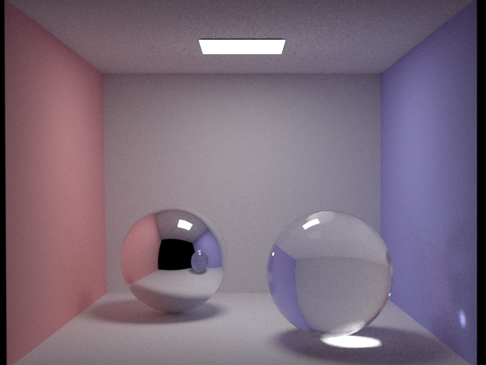

\(
\def\bold#1{\boldsymbol{#1}}
\def\vp{p}
\def\vr{r}
\def\integrand{\mathcal{F}}
\definecolor{red}{RGB}{203,23,206}
\)

A cornell box with a mirror and a glass ball illuminated by an area light. This scene was rendered
using path tracing and multiple importance sampling at 1024 samples per pixel.

The same scene rendered with photon mapping and 10M photons.
Preliminaries
Begin by importing the base code updates into your repository by
running git pull, cmake and recompiling. If there were any concurrent
changes to the same file, you may have to perform a merge (see
the git tutorials under "Preliminaries" for more information).
In this exercise you be implementing global illumination integrators and
a smooth dielectric BSDF. Your new integrators will approximate the solution of the rendering equation as discussed in class:
\[
L_o (\vp,\omega_o) = L_e(\vp,\omega_o) + \int_{H^2} f_r (\vp,\omega_o,\omega_i)\,L_i (\vp,\omega_i) \, \mathrm{d} \omega_i.
\]
where \(f_r\) is the BRDF, \(p\) is a surface position and \(L_i\) and \(L_o\) denote the incident and outgoing radiance functions.
Generally, \(L_i\) and \(L_o\) are related to each other using the ray tracing operator
\(\vr(p, \omega)\), which returns the nearest surface position visible along the ray \(\vp, \omega\), i.e.
\[
L_i(\vp,\omega)=L_o(\vr(\vp, \omega), -\omega)
\]
and the above integral is thus defined recursively.
Part 1: Dielectric BSDF (10 points)
Extend Nori with an ideally smooth dielectric BSDF. It should
support reflection and refraction using Fresnel's and Snell's laws, and
it should conform to the following XML interface:
<bsdf type="dielectric">
<!-- Interior index of refraction -->
<float name="intIOR" value="1.5"/>
<!-- Exterior index of refraction -->
<float name="extIOR" value="1"/>
</bsdf>
A good starting point is the provided code of another delta BRDF the Mirror.
You will find the implementation in src/mirror.cpp.
Part 2: Path Tracing (40 points)
-
path_mats implementation (10 Points)
In this part you will implement a naive global illumination path tracing integrator (path_mats)
which can integrate incident radiance by performing BSDF sampling. Paths only contribute
when they randomly hit a light source. Use Russian roulette for your path termination criterion.
-
path_mis implementation (20 Points)
In this part you will implement a more advanced path tracer (path_mis)
which can solve the rendering equation by performing both BSDF sampling and emitter sampling. Paths only contribute
when they randomly hit a light source. Use Russian roulette for your path termination criterion.
-
Validation (10 Points)
Pass the related tests found in ./scenes/pa4/tests:
- test-distant.xml,
- test-mesh.xml,
- test-mesh-furnace.xml
Using path_mats and path_mis render the following scenes found in ./scenes/pa4 :
- cbox/cbox_mats.xml,
- cbox/cbox_mis.xml,
In your report provide a 3-way comparison of your rendering results and the mis reference.
Part 3: Photon Mapping (40 points)
In this part you will be implementing a photonmapper integrator. This two pass integrator provides a biased
estimate of the rendering equation. During the first pass (see PhotonMapper::preprocess a pre-defined number of photons will be emitted from all
light sources and then consecutively traced and stored in an already provided PhotonMap data structure,
which is basically a KDTree. During the second pass (PhotonMapper::Li) camera originating paths will
be terminated at their first diffuse interaction and reflected radiance will be computed at those positions.
The scene specification of the photonmapper follows:
<integrator type="photonmapper">
<!-- Total number of emitted photons (1M) -->
<integer name="photonCount" value="1000000"/>
<!-- Photon Query Radius -->
<float name="photonRadius" value="1.5"/>
</integrator>
-
Photon Emission (10 Points)
Implement photon emission from an isotropic point light, your mesh lights and the distant disk light.
Have a look at the photon data structure. Modify emitters to be able to shoot photons. Quantities: directins,power.
What about multiple light sources? talk about scene::samplePhoton and emitter::samplePhoton.
-
Point Lights (2 Points)
Implement photon emission from isotropic point lights. The power of each photon directly correlates
with the number of photons shot from that light source and the power of the point light.
-
Mesh Area Lights (4 Points)
Implement photon emission from diffuse mesh area lights: first choose a uniform random location on the surface
area of the light, and then choose a cosine-weighted random direction over the hemisphere defined by the
surface normal.
-
Distant Disk Lights (4 Points)
Implement photon emission from an isotropic point light. The power of each photon directly correlates
with the number of photons shot from that light source and the power of the point light.
-
Photon Scattering & Storage (10 Points)
-
Perfect Mirrors (2 points)
Perfect mirror materials are delta materials that reflect all incident illumination at the reflection direction.
When a photon intersects a perfect mirror material it is always reflected with full throughput.
Photons are never stored on mirror surfaces.
-
Specular Dielectrics (2 points)
Dielectric materials (such as glass, water etc.) are delta materials that both reflect and refract all incident
light at the reflection and refraction direction respectively. The equations for figuring out reflection
and refraction directions are given on the course slides (Reflection and Snells law). The probability that
a photon will be reflected or refracted is given by the Fresnel equations. Since there is no absoprtion on
dielectric surfaces, you can use a random variable in combination with the Fresnel equations to decide
whether a photon should reflect or refract. Photons are never stored on dielectric surfaces and since there
is no absorption, the power of the incident and outgoing photon should remain the same (i.e. 100% throughput).
-
Microfacet (4 points)
Our Microfacet BRDF is a linear combination of a diffuse and a glossy Torrance Sparrow lobe. When a photon intersects
a microfacet surface it is not stored, but it is reflected according to our Microfacet::PDF. Since
we cannot perfectly importance sample this material, we will have to update the power of the outgoing photon
according to \(f_r/\textit{pdf}\).
-
Diffuse (2 points)
When a photon encounters a diffuse material it is stored in the photon map and continues using BSDF sampling.
Store photons (position, direction and power) in the provided PhotonMap data structure.
Apply russian roulette here before continuing based on total diffuse reflectance to avoid an exponential growth of
low power photons.
-
Rendering/Radiance Estimation (15 Points)
Start by implementing an integrator similar to path_mats.
At all non delta material intersections, direct illumination sampling should be performed according to the emitters density function.
Camera paths that directly reach an emitter or the previous interaction was with a delta material should accumulate emitted radiance
at that point from that emitter. If the previous interaction was with a non delta material then emitted radiance should not be added
(in our case this only applies to microfacet since camera paths terminate at the first diffuse interaction). If the emitter is coated
with a material, then the camera path should then continue according to the materials density function.
When a ray intersects a mirror,dielectric or microfacet surface, reflect or refract it accordingly. Use Russian roulette for your path
termination criterion. Once a camera path reaches a diffuse surface, perform density estimation to approximate reflected radiance and
then terminate the camera path. You can approximate reflected radiance using:
\[
L_r = \sum^{m_p} \frac{ \rho W_p } {\pi r^2 N_p}
\]
where \(\rho\) is the reflectance at the query point, \(m_p\) is the number of photons found in the search radius \(r\), \(W_p\) is the
power of each photon and \(N_p\) is the total number of emitted photons. Do not count photons within the search radius when they are
hitting the surface from the back.
-
Validation (5 Points)
Using photonmapper render the following scenes found in ./scenes/pa4 :
- cbox/cbox_pmap.xml,
- cbox/clocks_pmap.xml,
In your report provide a 2-way comparison of your rendering results and the photon mapping reference.
Part 4: Interesting Scene (10 Points)
Make your own interesting scene and submit a rendering (or several) using any combination of the implemented techniques. The filename format for this scene should be interesting-pa4-firstname-familyname-N}, where N depends on how many interesting images you are submitting. The aspect ratio of your image should be 4:3. Be creative, your renderings will be posted on the Course Gallery.
Hacker Points: Progressive updates (20 points)
For this part your task is to extend your renderer such that it can display intermediate results
of the full but still unconverged image. For path tracing integrators you can show the noisy
estimate of the image after every pass with a few number of samples. For the photon mapper you can
show a progressive estimate of the image starting with a large search radius and then progressively
reducing it. Use the algorithm described in Figure 13 of Knaus and Zwicker
[2011]
{kind=link}
{kind=link}